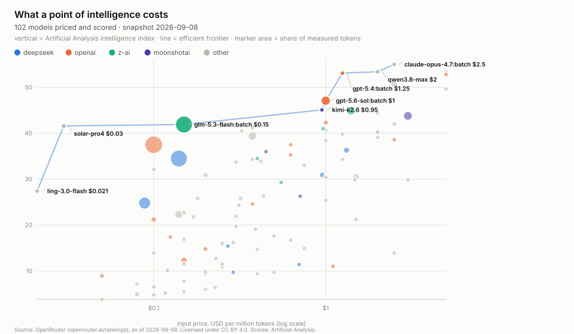
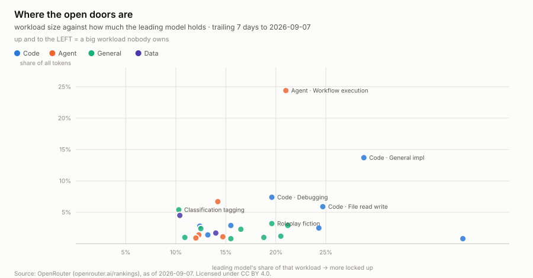
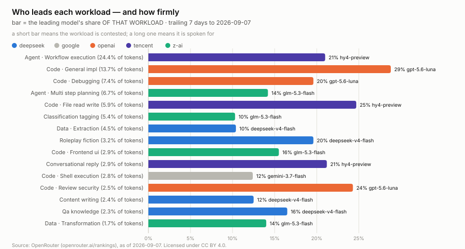
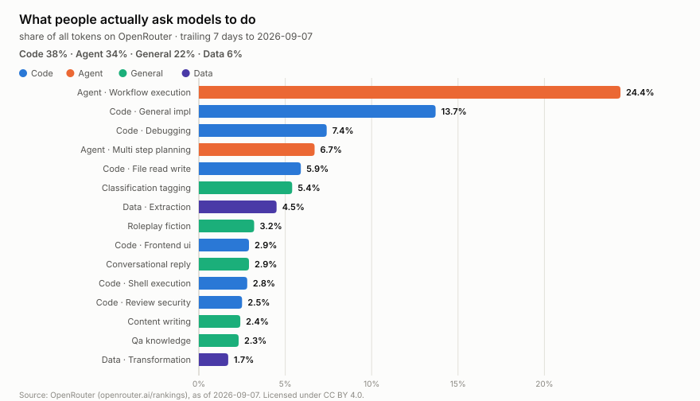

Point-in-time captures from 6 sources that do not keep their own history. Each capture stores the bytes as served, with a manifest row recording the URL, fetch time and SHA-256.
History held: 2026-09-01 to 2026-09-08.
Figures are rebuilt from the derived tables on every run; each one names the entities it is about so it can be acted on without a further query.




| source | publisher | cadence | terms |
|---|---|---|---|
openrouter.benchmarks.artificial-analysis | OpenRouter | weekly | CC BY 4.0 via OpenRouter; scores originate with Artificial Analysis (artificialanalysis.ai) |
openrouter.benchmarks.design-arena | OpenRouter | weekly | CC BY 4.0 via OpenRouter; scores originate with Design Arena (www.designarena.ai) |
openrouter.benchmarks.openrouter | OpenRouter | weekly | CC BY 4.0 via OpenRouter; scores originate with OpenRouter's own evaluations |
openrouter.classifications.task | OpenRouter | weekly | CC BY 4.0 — cite: Source: OpenRouter (openrouter.ai/rankings), as of <as_of>. |
openrouter.models.catalog | OpenRouter | weekly | public API; see https://openrouter.ai/terms |
openrouter.sessions.cost | OpenRouter | weekly | CC BY 4.0 — cite: Source: OpenRouter Data API, as of <as_of>. |
Derived tables are CSV under data/ in
the repository; the bytes they came from are under
raw/, and SOURCES.md lists every source URL.
Every observation carries source_id and raw_ref. The
matching manifest row holds that raw_ref with the URL, the fetch
timestamp and a SHA-256 of exactly what came back, so any number here traces to
the bytes it came from.
Cite this dataset by its repository and the date you took it from: https://github.com/q3dresearch/wss-openrouter, accessed 2026-09-08.